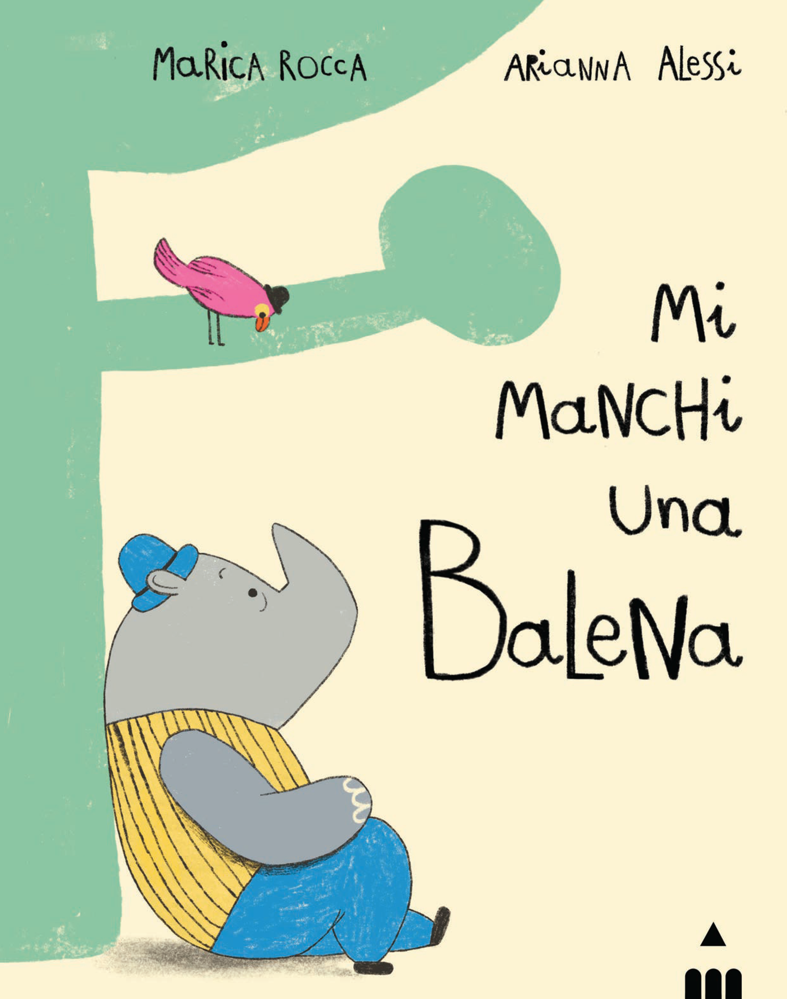

From a phrase
It all started with a phone call and an unusual way of saying: "I miss you."

Picture book
I miss you a whale when you are far away, so very far away, because I am afraid you will never come back.
Inseparable... almost. The stars of this picture book are a rhinoceros and an oxpecker, the little red-billed bird perched on his horn. They are an irresistible and unlikely pair, starting with their contrasting looks and size: he is large and grey; she is small and colourful. Their personalities differ too. The bird is exuberant, always ready to play, pull faces and seek a cuddle. She has all the restless energy of childhood. The rhinoceros is calmer and less demonstrative. His days are busy, and he cannot give his feathered friend all the attention she would like. The oxpecker wants to be close to him every moment. When she begins to miss him, she simply has to tell him! From a tiny gnat to a whale, the size of animals becomes a way to say "I miss you" to someone we love.
Buy from Amazon. External links open in a new tab.
This book began with a phone call.
"I miss you a whale," I said playfully to someone I cared about. It felt like a funny, enormous way to say how much I missed them.
That sentence grew into a story about missing someone and caring for them: wishing a person far away were close by. Sometimes distances feel enormous, and we are afraid the people we love might not come back.
In the book, the oxpecker looks for a way to tell the rhinoceros how much she misses him. From a gnat to a whale, animals become an imaginary measure of something that cannot really be measured: how much we care about someone.
It all started with a phone call and an unusual way of saying: "I miss you."

The first illustrations Arianna Alessi created while working on the book.

A beluga appeared in early versions of the story. It did not make it into the final book, but it is still swimming among the notes.
Participation in the LibrArte festival with Mi manchi una balena.
A reading of Mi manchi una balena and a creative workshop for children aged 3–7.
Alfredo Paniconi examines the writing, illustrations and editorial production, highlighting the balance of tenderness and humour.
Read ↗A reading of the book through absence, affection and the imaginative animal-scale measurement of missing someone.
Read ↗A reflection on expressing emotions, praising the animal metaphor and the dialogue between words and illustrations.
Read ↗The picture book appears in two selections featuring friendship and rhinoceroses.
Read ↗An introduction to the story and its illustrations, presenting the unlikely friendship between the rhino and the oxpecker.
Read ↗An audio conversation with Marica Rocca about the book, hosted by Livio Partiti.
Listen ↗A dedicated episode of I libri di Radio Kids, curated by Isabella Carbone.
Listen ↗